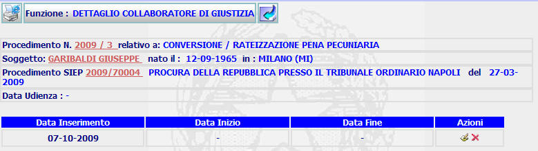

GENERALITA'
DETTAGLIO COLLABORATORE DI GIUSTIZIA: La funzione, consente di visualizzare i dati di dettaglio di un collaboratore di giustizia e se ancora non presente, consente l'inserimento dello status di collaboratore di giustizia per il soggetto di un determinato procedimento SIUS attraverso la funzione di inserimento collaboratore di giustizia.
LE MASCHERE VIDEO
La funzione in esame viene realizzata attraverso l'utilizzo della seguente maschera che riporta gli elementi descrittivi e operativi del collaboratore di giustizia :

N.B. nel caso che risulta ancora inserito lo status di collaboratore di giustizia, comparirà in fondo alla maschera la dicitura:
inoltre verrà dato all'utente la possibilità di inserire lo status attraverso la
funzione di inserimento
collaboratore di giustizia attraverso il pulsante
 posto in alto nella pagina:
posto in alto nella pagina:
COME FARE PER ...
| Per visualizzare il dettaglio del procedimento Sius l'utente deve cliccare sul link relativo all'Anno/Numero del procedimento Sius evidenziato in rosso; |

| Per visualizzare il dettaglio del soggetto l'utente deve cliccare sul link relativo al cognome/nome del soggetto evidenziato in rosso; |

| Per
visualizzare il
dettaglio del procedimento Siep
l'utente deve cliccare sul link
relativo all'Anno/Numero del procedimento Siep evidenziato in
rosso;
| |
| Per inserire lo
status di collaboratore di giustizia in relazione al
procedimento Sius, nel caso in cui ancora non risulta,l'utente deve:
Cliccare sul foglio bianco
|
| Per modificare i dati inseriti relativi allo status di collaboratore di giustizia,, l'utente deve: |
Cliccare sul pulsante
 ;
si aprirà la maschera
di Modifica collaboratore di
Giustizia che permette di
effettuare le modifiche volute.
;
si aprirà la maschera
di Modifica collaboratore di
Giustizia che permette di
effettuare le modifiche volute.
| Per cancellare l'avvocato (operazione possibile solo se l'avvocato è stato inserito da un utente dell'ufficio corrente) e tutti i dati relativi l'utente deve: |
Cliccare sul pulsante
 ;
verrà visualizzato il seguente messaggio:
;
verrà visualizzato il seguente messaggio:

Cliccando sul pulsante
si annullerà l'operazione di cancellazione e si ritornerà alla pagina di dettaglio dell'avvocato.
Cliccando sul pulsante
il sistema visualizzerà il sistema visualizzerà il messaggio:
Per tornare alla pagina del dettaglio del collaboratore di giustizia occorre agire sul pulsante
CAMPI
Nella maschera non sono presenti campi digitabili.
PULSANTI
Nella maschera sono presenti i pulsanti
 ,
,
 ,
e
che fanno parte del gruppo di
pulsanti di "Uso Comune"
,
e
che fanno parte del gruppo di
pulsanti di "Uso Comune"
BOTTONI
Oltre ai comandi funzionali relativi al menù verticale non sono presenti comandi.
CONTROLLI
In questa maschera non sono effettuati controlli.